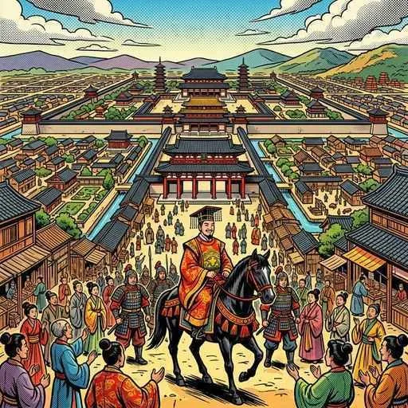
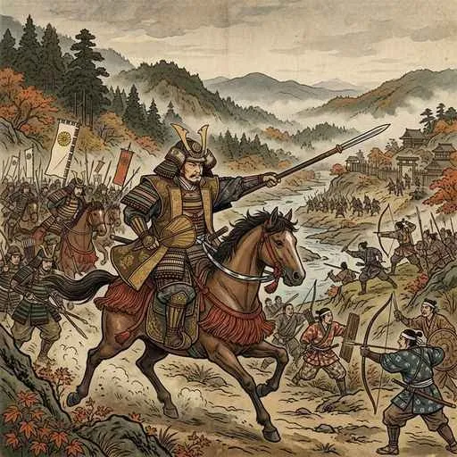
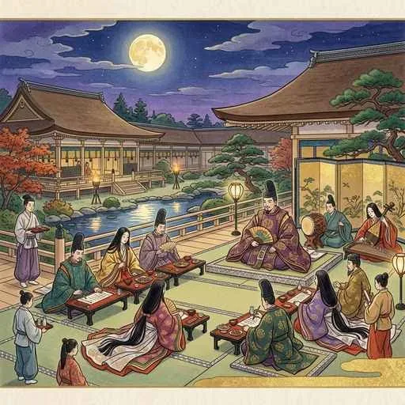
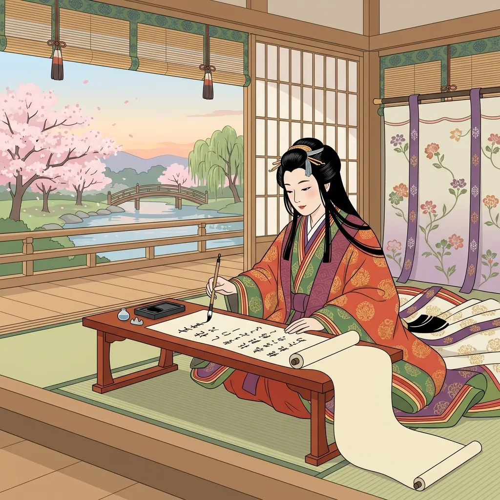
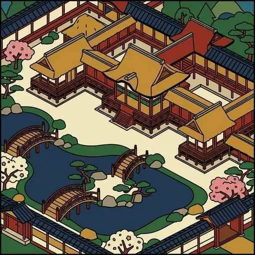
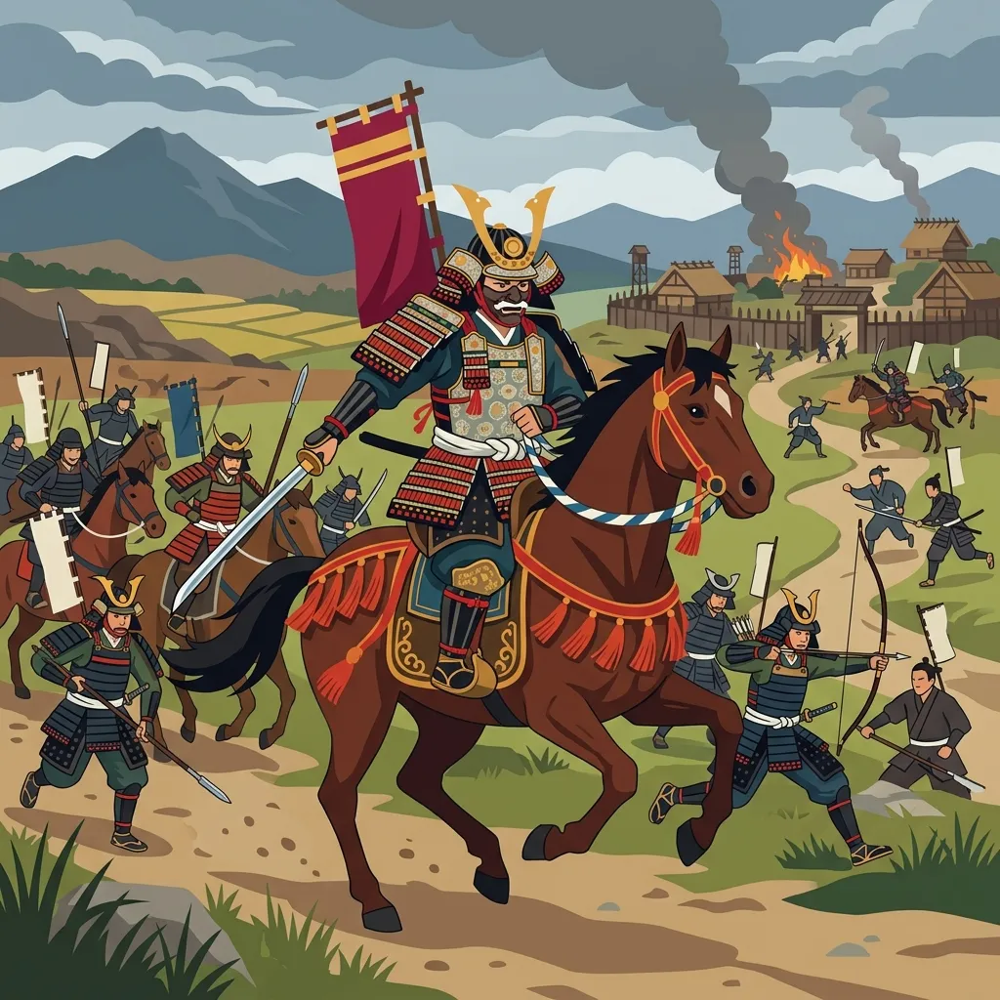
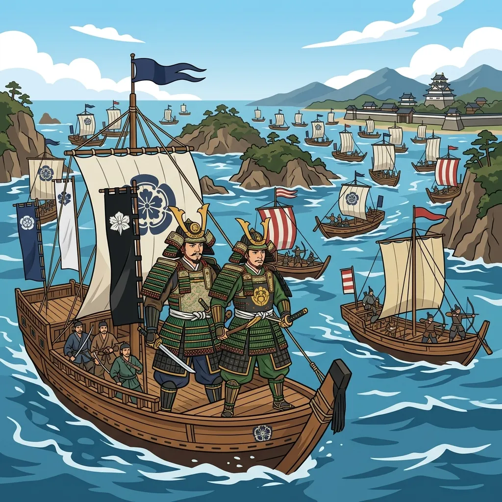

9. 平安京の遷都と摂関政治
奈良時代の終わり、仏教の僧侶たちが政治に口を挟むようになり、都の政治は乱れていました。これを嫌い、政治を一新しようと都を京都に移したのが桓武天皇です。ここから約400年にわたる「平安時代」が始まります。今回は、平安京でのきらびやかな貴族たちの暮らしと「摂関政治」、日本独自の「国風文化」の発展、そして裏で力をつけていった「武士」の誕生と権力の掌握までを詳しく解説します！
1. 平安京への遷都と東北の平定
794年、桓武天皇（かんむてんのう）は、奈良の仏教勢力から距離を置き、政治を立て直すために、山背（京都）の地に新しく造営した大都市平安京（へいあんきょう）へ都を移しました（語呂合わせ「鳴くよ（794）ウグイス平安京」で覚えましょう！）。以後、1869年に東京へ遷都するまで、1000年以上にわたり平安京は日本の都であり続けました。

図1：山と川に囲まれた要衝の地に造営され、長きにわたり都となった「平安京」
① 征夷大将軍・坂上田村麻呂の派遣
桓武天皇は、当時まだ大和朝廷の支配が十分に及んでいなかった東北地方を支配下に置くため、軍隊を派遣しました。その司令官である征夷大将軍（せいいたいしょうぐん）に任命されたのが坂上田村麻呂（さかのうえのたむらまろ）です。
田村麻呂は東北へ進軍し、現地の先住の民（蝦夷・えみし）の強力な指導者であるアテルイと激しい戦いを繰り広げ、ついに降伏させました。これにより、朝廷の支配地域は東北北部まで大きく拡大しました。

図2：東北を平定し、のちに清水寺を創建したことでも知られる「坂上田村麻呂」
② 山の中の新しい仏教（天台宗と真言宗）
平安時代の初め、政治と結びつきすぎた奈良の寺院に対抗し、山奥にこもって厳しい修行を行う新しい仏教の宗派が誕生しました。
- 最澄（さいちょう）：唐から帰国後、比叡山（ひえいざん）に延暦寺（えんりゃくじ）を建てて天台宗（てんだいしゅう）を開きました。
- 空海（くうかい）：同じく唐から帰国後、高野山（こうやさん）に金剛峯寺（こんごうぶじ）を建てて真言宗（しんごんしゅう）を開きました。
2. 遣唐使の廃止と「摂関政治」の全盛期
9世紀末、中国（唐）の衰退が進む中、894年に貴族の菅原道真（すがわらのみちざね）の提案によって、命がけの渡航である遣唐使（けんとうし）の派遣が廃止（停止）されました（語呂合わせ「白紙（894）に戻そう遣唐使」）。これ以降、日本は大陸の文化を直接取り入れるのをやめ、独自の文化を成熟させることになります。
図3：唐の国勢衰退と海の危険から、菅原道真の提案で廃止された「遣唐使」のイメージ
① 藤原氏による「摂関政治」
平安時代の中頃、朝廷の権力を独占したのが藤原氏です。藤原氏は、自分の娘を天皇の后（きさき）にし、その間に生まれた子どもを次の天皇に即位させることで、天皇の祖父（外戚・がいせき）として権力を掌握しました。そして、天皇が幼い時には「摂政（せっしょう）」、成人してからは「関白（かんぱく）」という最高の職を独占して政治を行いました。この政治体制を摂関政治（せっかんせいじ）と呼びます。
その絶頂期を築いたのが、11世紀前半の藤原道長（みちなが）と、その息子である藤原頼通（よりみち）の親子です。道長が「この世をば わが世とぞ思う 望月の 欠けたることも なしと思えば（この世は自分の思い通りだ。満月のように欠けたところがないくらい満ち足りている）」と詠んだ歌は、当時の藤原氏の凄まじい栄華を象徴しています。

図4：娘を次々と天皇の后にして、摂関政治の絶頂期を築いた「藤原道長」
3. 日本独自の「国風文化」の発展
遣唐使の廃止に伴い、日本の風土や日本人の感性に合った、優雅で洗練された独自の文化である国風文化（こくふうぶんか／和風文化）が発展しました。
① かな文字の誕生と女流文学
漢字を崩して日本独自の音を表す表記として、平仮名（ひらがな）や片仮名（カタカナ）のかな文字が誕生しました。これにより、漢字が中心だった男性に代わり、かな文字を用いて女性たちが宮廷生活を舞台にした素晴らしい文学作品を数多く執筆しました。
- 紫式部（むらさきしきぶ）：主人公・光源氏の生涯を描いた、世界最古の長編小説とも言われる『源氏物語（げんじものがたり）』を執筆。
- 清少納言（せいしょうなごん）：「春はあけぼの」の書き出しで有名で、宮廷の生活をいきいきと綴った随筆集『枕草子（まくらのそうし）』を執筆。
- 紀貫之（きのつらゆき）：初の勅撰和歌集（天皇の命令で編集した和歌集）である『古今和歌集（こきんわかうしゅう）』を編纂。さらに、女性のふりをしてかな文字で書いた『土佐日記（とさにっき）』を執筆。

図5：かな文字の発達により、紫式部や清少納言などの華やかな女流文学が花開いたイメージ
② 貴族の生活様式と「寝殿造」
貴族たちの生活空間も日本風に変化しました。庭園や大きな池を囲むように建物を回廊でつなぐ、通気性が良く夏を涼しく過ごせる日本風の住宅様式である寝殿造（しんでんづくり）が一般化しました。部屋は襖（ふすま）や屏風（びょうぶ）で仕切られ、畳は必要な場所にだけ部分的に敷かれていました。

図6：大きな庭園や池を配した、貴族たちの開放的な邸宅スタイルである「寝殿造」
③ 浄土信仰と「平等院鳳凰堂」
平安時代中期、社会が乱れて「もうすぐこの世が滅びるのではないか」という不安（末法思想）が広がると、「南無阿弥陀仏（なむあみだぶつ）」と唱えれば、死後に極楽浄土へ行けるという浄土信仰（じょうどしんこう／浄土教）が貴族から庶民へ急速に広まりました（僧の**空也**が京の市中で念仏を広めたことでも有名です）。
この極楽浄土の様子をこの世に再現しようと、藤原頼通が京都の宇治に建てたのが、現在10円玉に描かれている平等院鳳凰堂（びょうどういんほうおうどう）です。池のほとりに建つその壮麗な金堂は、天平文化の面影を残しつつ、極楽の宮殿を模して作られました。
4. 武士の台頭と平清盛の政治
貴族たちが平安京で優雅な生活を送っている間、地方の社会秩序は乱れ、盗賊や暴動が頻発していました。前単元で触れた「墾田永年私財法」により生まれた自分の土地（荘園）や財産を、自らの力で守るために、武装した武装地主集団＝武士（ぶし）が誕生しました。
武士たちはやがて「源氏（げんじ）」や「平氏（へいし）」という強力な武士団を結成し、朝廷に対して自らの力を誇示するようになります。
① 武士の乱（平将門と藤原純友）
10世紀前半、武士たちが朝廷に対して大規模な反乱を起こしました。
- 平将門（たいらのまさかど）の乱（935年）：関東（下総）で挙兵し、自らを「新皇」と名乗って朝廷から独立した国を作ろうとしましたが、他の武士に討たれました。
- 藤原純友（ふじわらのすみとも）の乱（939年）：瀬戸内海の海賊を率いて挙兵し、国府や太宰府を襲撃しましたが、これも朝廷が派遣した武士に鎮圧されました。
これら「承平・天慶の乱（じょうへいてんぎょうのらん）」は、朝廷にとって「自分たちの力では乱を治められず、武士の武力に頼らざるを得ない」ことを痛感させる出来事となりました。

図7：朝廷に叛旗を翻し、関東に独自勢力を築こうとした武士「平将門」のイメージ

図8：瀬戸内海を舞台に大規模な海賊船団を率いて反乱を起こした「藤原純友」のイメージ
② 平氏政権の樹立と日宋貿易
12世紀に入ると、朝廷内での権力争いや皇位継承争い（1156年 **保元の乱**、1159年 **平治の乱**）において、武士の軍事力が勝敗を決定づけるようになり、武士の政治的地位が急上昇しました。
この争いを勝ち抜いた平氏の棟梁・平清盛（たいらのきよもり）は、1167年に武士として初めて朝廷の最高職である**太政大臣（だいじょうだいじん）**に就任し、一族で高い役職を独占する「平氏政権（へいしせいげん）」を築きました（これまでの藤原氏と同様に天皇と親戚関係を結ぶ方法をとりました）。
清盛は、現在の神戸港にあたる大輪田泊（おおわだのとまり）を私費で大修築し、中国の「宋（そう）」との間で日宋貿易（にっそうぼうえき）を本格化させました。大量の宋銭や高級な陶磁器を輸入し、日本に莫大な富をもたらしたのです。
🔥 定期テスト完全攻略！「平安時代と武士の誕生」重要ポイント整理
テストで最も狙われる平安時代の記述・対比問題のまとめです！
① 「最澄」と「空海」の覚え方
・**比叡山（ひえいざん）** ＝ 最澄（天台宗、延暦寺）➔ 「**比叡山で最長（最澄）の天（天台宗）の修行**」
・**高野山（こうやさん）** ＝ 空海（真言宗、金剛峯寺）➔ 「**高野（高野山）の空（空海）に真（真言宗）の星**」
② 「摂政」と「関白」の違い
・摂政：天皇が**幼少・または女性**である期間に、天皇の代わりに政治を行う。
・関白：天皇が**成人**した後、天皇の後見役（補佐役）として政治を取りまとめる。
③ 「保元の乱（1156年）」と「平治の乱（1159年）」の因果関係
・**保元の乱**：天皇と上皇の争い。武士（平清盛・源義朝ら）が活躍し、武士の武力の強さを朝廷が知る。
・**平治の乱**：手柄の配分に不満を持った**源氏（源義朝）**が、**平氏（平清盛）**と対立。清盛が勝利し、源氏を追放。➔ **平清盛が太政大臣になり、平氏政権が樹立**される。